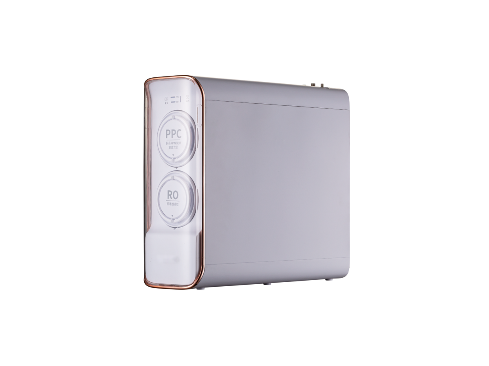
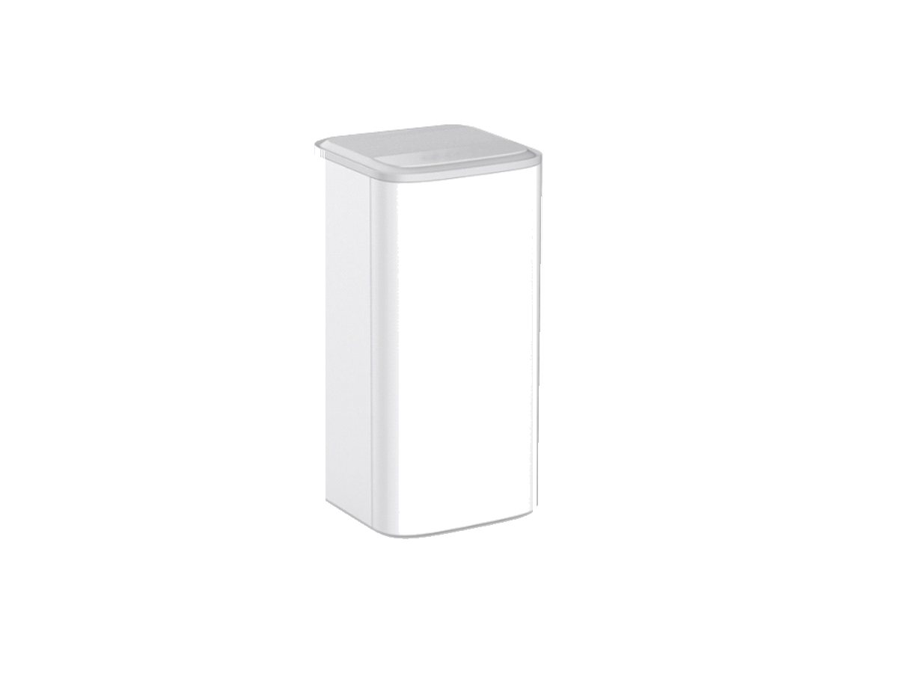

Under-Sink
Under-SinkRP-U07
400–600 GPD under-sink RO purifier
SKU: RP-U07
MOQ: Confirm on enquiry
Home / Products / Under-Sink RO Systems / RP-U01

Under-Sink RO Systems
Tool-free pull-out cartridge RO system (M2)
RP-U01 — Tool-free pull-out cartridge RO system. Key specification: RO capacity options 600 / 800 / 1000 GPD. Specifications are confirmed per model and order. A white, copper-trim variant is also available (800–1400 GPD), as well as a 400–800G variant; see Variants below.
Voltage / frequency is configurable to the target country. Other configurations are confirmed per order.
Three variants — quote as RP-U01 and specify the variant (dark grey main model, white with copper trim, or 400–800G variant).
Hover over a variant image to see its specifications. On touch screens, tap an image.


Full specifications for each variant, side by side. The specification table further down shows RP-U01's values.
| Specification | RP-U01-1 — dark grey (M2) | RP-U01-2 — white, copper trim (M2403R) | RP-U01-3 — 400–800G variant (AM613R) |
|---|---|---|---|
| RO capacity | 600 / 800 / 1000 GPD | 800–1400 GPD | 400 / 600 / 800 GPD |
| Cartridges | 2: pre-filter + RO | Confirmed per order | 1: 4-in-1 multi-functional filter |
| Cartridge change | Tool-free pull-out change | Front-extraction cartridge change | Side-insert filter change |
| Filtration | Pleated cotton + activated carbon pre-filter + RO | PPC + RO | PP + C + RO + post carbon |
| Dimensions | 386×146×334mm | Confirmed per order | 180 × 246 × 436 mm |
| Rated purified volume | 4000 L | Confirmed per order | Confirmed per order |
| Rated power | 100 W | Confirmed per order | Confirmed per order |
| Pure-water flow | 2.6 L/min (initial 3 L/min) | Confirmed per order | Confirmed per order |
| Voltage / frequency | Configurable to target country | Configurable to target country | Configurable to target country |
| Colour | Dark grey | White with copper trim | White |
The white, copper-trim variant shares the same front-extraction RO design as the main model. Its cartridge count, dimensions and rated purified volume are confirmed per order. The 400–800G variant uses a single 4-in-1 multi-functional filter (PP + C + RO + post carbon) with side-insert filter change; its rated purified volume is confirmed per order.
12 specification rows from the ROPureOEM catalogue.
| RO capacity options | 600 / 800 / 1000 GPD |
|---|---|
| Rated total purified water volume | 4000 L |
| Cartridges | 2: pre-filter + RO |
| Pre-filter | Pleated cotton + activated carbon |
| RO cartridge | Ultrasonically welded as one unit |
| Cartridge service | Tool-free pull-out change; replace the complete RO cartridge at end of life |
| Filtration option | 6-stage version available |
| Dimensions | 386×146×334mm |
| Rated power | 100 W |
| Pure-water flow | 2.6 L/min (initial 3 L/min) |
| Voltage / frequency | Configurable to target country |
| Other configurations | Confirmed per order |
Specifications are taken from the ROPureOEM catalogue. Where a value is not yet confirmed, it is listed as “Confirmed per order” — we do not publish unconfirmed figures.
Under-Sink400–600 GPD under-sink RO purifier
SKU: RP-U07
MOQ: Confirm on enquiry
 Under-Sink
Under-SinkUnder-sink RO with storage heating
SKU: RP-U08
MOQ: Confirm on enquiry
 Under-Sink
Under-SinkHigh-capacity front-access RO purifier
SKU: RP-U09
MOQ: Confirm on enquiry
 Under-Sink
Under-SinkThree-cartridge RO purifier
SKU: RP-U11
MOQ: Confirm on enquiry